Metroid as a series will always remain near and dear to my heart as both a foundational influence to the way I interact with and seek out games, while also cementing the kinds of experiences I would come to be drawn to.
Ever since the first time I ever played Super Metroid on a shitty school-issued laptop, I was enraptured by the sense of atmosphere, immersion, and profound loneliness. Those feelings have never left me.
I devoured every Metroid game I could get my hands on, and a little while ago I realized that I had played most of the games in the series and might as well just play every single one. Good idea? Bad idea? I don't know. It's for science.
This is a write up of both the development history as well as my personal experience with each one of these games. It's also a big excuse for me to talk about something I love.
All the mainline games are included in chronological order of release. As much as I'm sure there are Metroid Prime Pinball fans out there, that one doesn't make the cut. Sorry. (fun game though!)
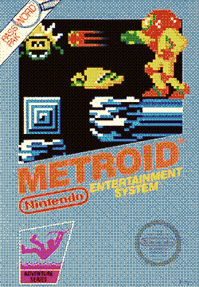 |
METROID - 1986A very atmospheric movie with little plot, a lot of symbolism, and even more rain. |
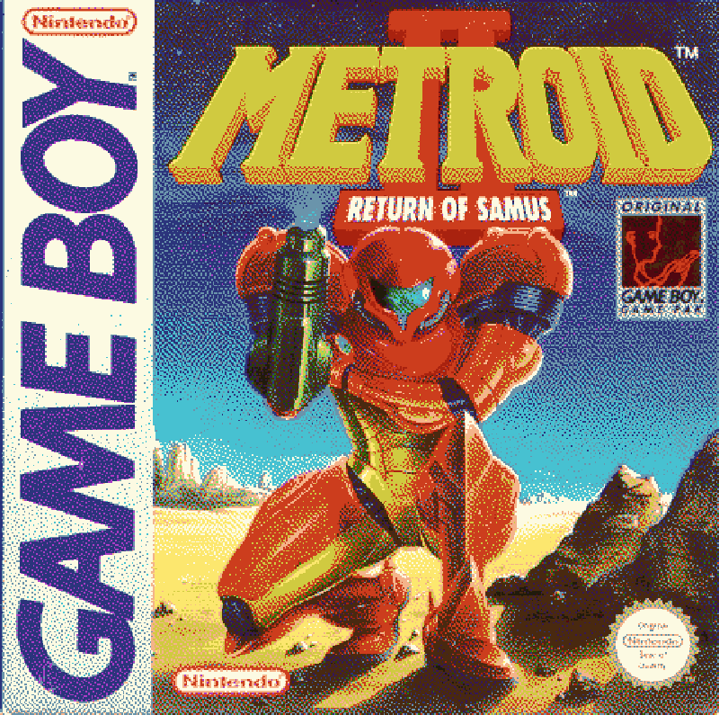 |
METROID II: RETURN OF SAMUS - 1991A very atmospheric movie with little plot, a lot of symbolism, and even more rain. |
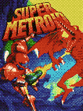 |
SUPER METROID - 1994A very atmospheric movie with little plot, a lot of symbolism, and even more rain. |
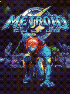 |
METROID FUSION - 2002A very atmospheric movie with little plot, a lot of symbolism, and even more rain. |
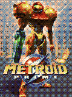 |
METROID PRIME - 2002A very atmospheric movie with little plot, a lot of symbolism, and even more rain. |
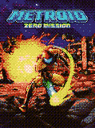 |
METROID ZERO MISSION - 2004A very atmospheric movie with little plot, a lot of symbolism, and even more rain. |
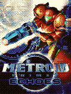 |
METROID PRIME 2: ECHOES - 2004A very atmospheric movie with little plot, a lot of symbolism, and even more rain. |
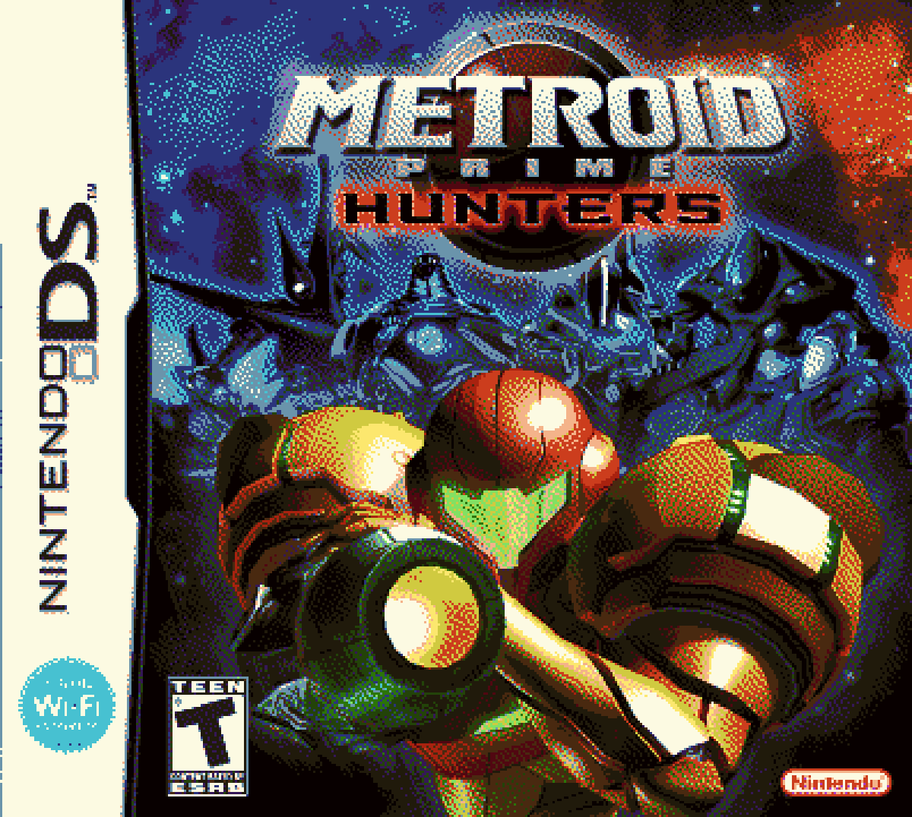 |
METROID PRIME HUNTERS - 2006A very atmospheric movie with little plot, a lot of symbolism, and even more rain. |
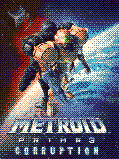 |
METROID PRIME 3: CORRUPTIONA very atmospheric movie with little plot, a lot of symbolism, and even more rain. |
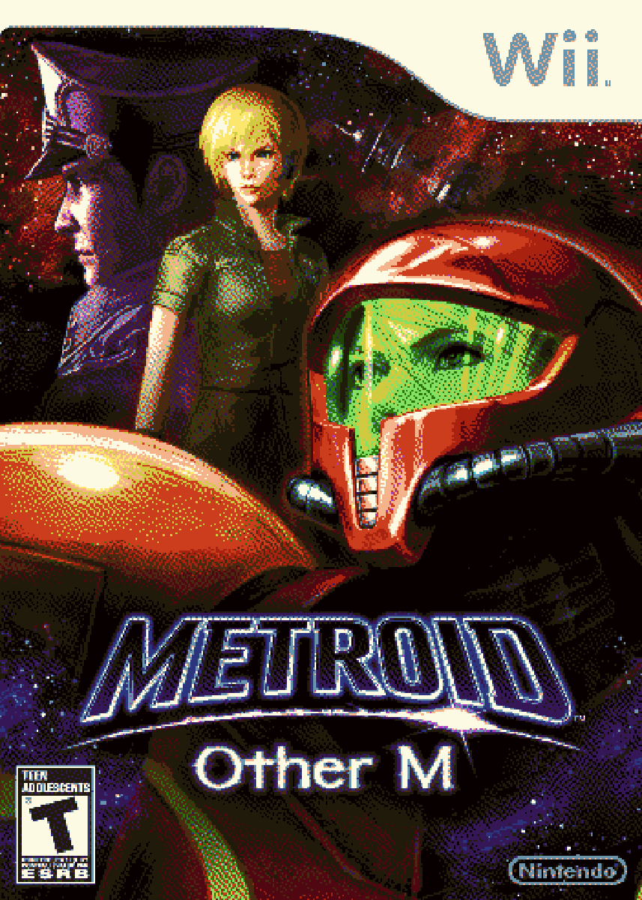 |
METROID: OTHER M - 2010A very atmospheric movie with little plot, a lot of symbolism, and even more rain. |
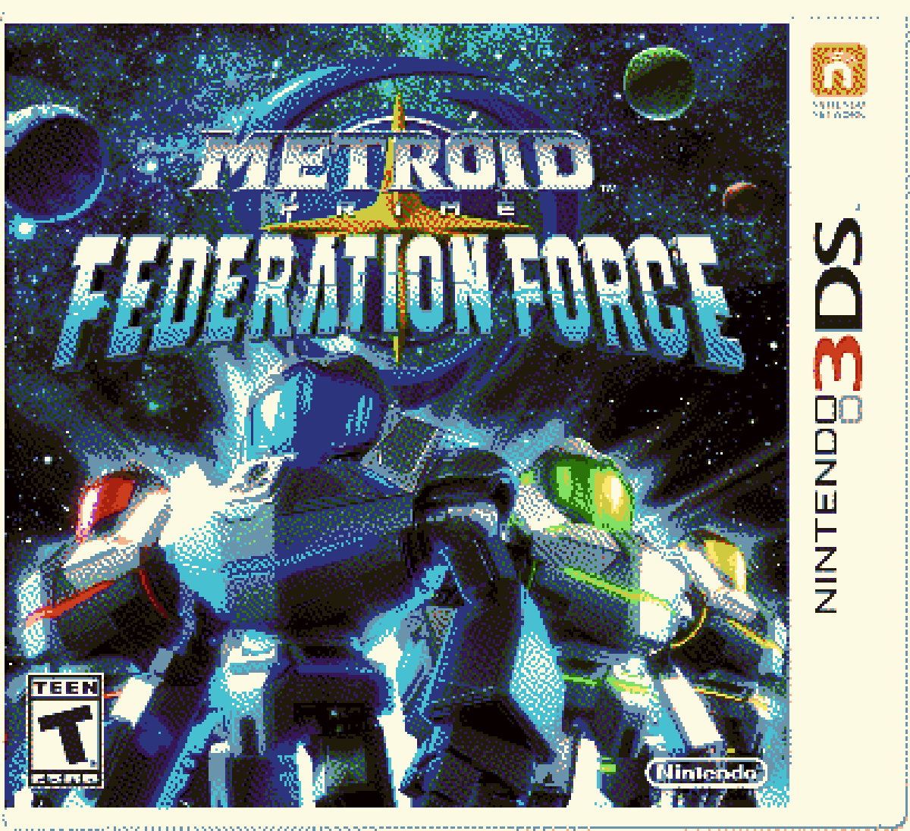 |
METROID PRIME: FEDERATION FORCE - 2016A very atmospheric movie with little plot, a lot of symbolism, and even more rain. |
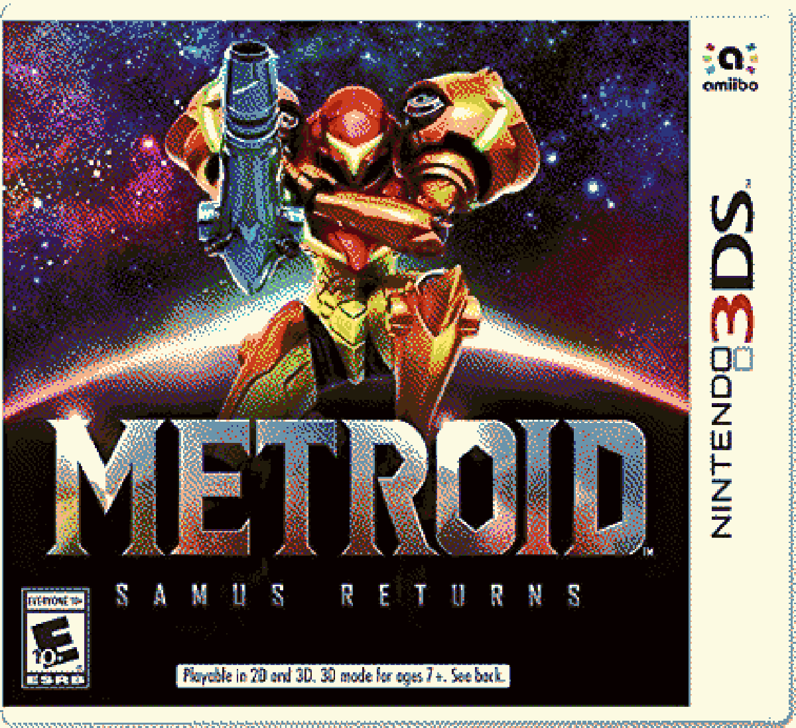 |
METROID: SAMUS RETURNS - 2017Mercury Steam is a weird studio. Founded in Spain in the early 2000's, they would work with American Mcgee on Scrapland before making a horror game with Clive Barker. Shortly after that they went over to make a Castlevania game with none other than Hideo Kojima. Just covering all the bases I suppose. |
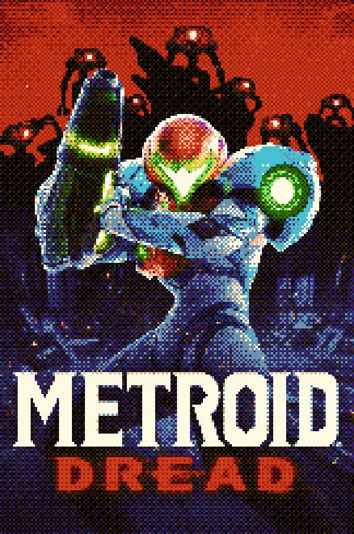 |
METROID DREAD - 2021Metroid Dread is a bit of a funny one since the idea of a Metroid 5 named Dread existed for over a decade before the game was made. Sakamoto initially concieved of a 2D Metroid game for the DS that would focus on an evolution of the SA-X from fusion; Dread would be to feature several unkillable enemies that the player would have to avoid. |
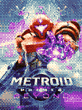 |
METROID PRIME 4: BEYOND - 2025Prime 4 is probably a close second to Prime 1's ridicoulous development timeline, and that's only because Jeff Spangenberg exists. |
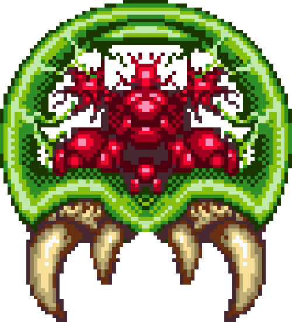